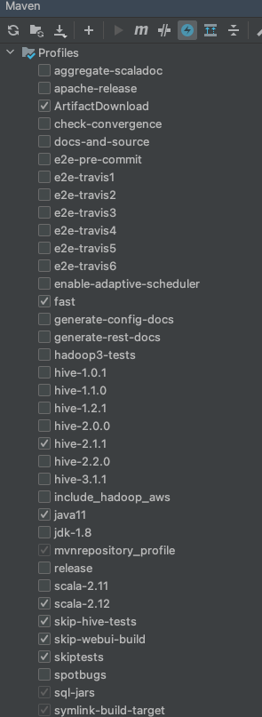
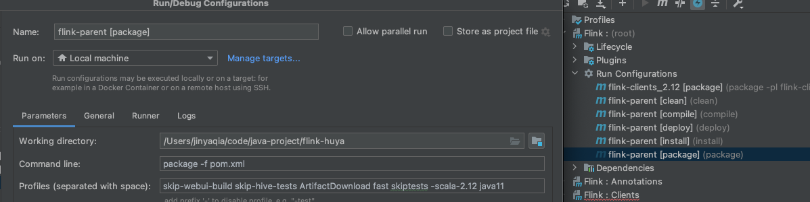
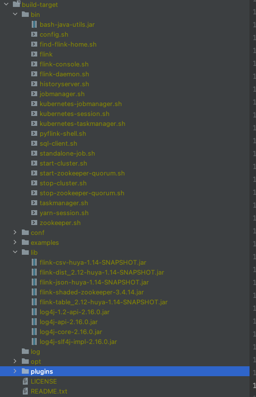
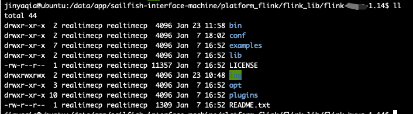
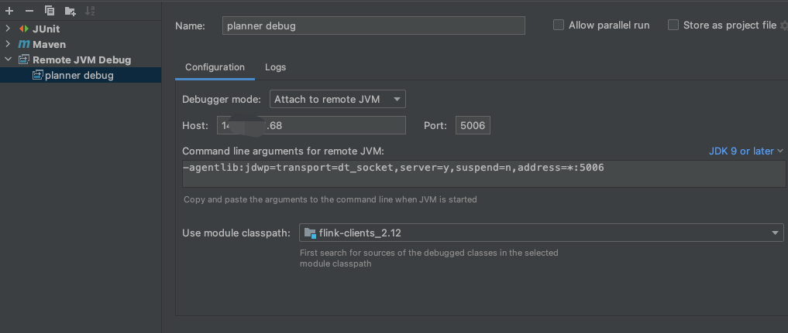

flink远程调试
flink远程调试
背景
在读flink源码的时候，如果需要了解作业运行的逻辑，除了运行单元测试之外，往往需要用到远程调试，下面就以作业提交的流程(熟悉flink client模块)来配置下远程调试的环境。
1 | flink: release-1.14 |
下载并编译源码
首先从github上把flink源码clone下来，我这里使用的是release-1.14这个分支的代码，导入idea，在maven插件这里勾选以下的设置

在Flink:这个模块里的Lifecycle点击运行package，也可以手动修改flink-parent[package]，再运行

编译过程中可能会存在找不到包的情况，我使用的是阿里云的maven镜像仓库，本地编译完成后，编译完后的二进制包如下：

将该包打包上传到服务器上

启动测试集群
1 | bin/jobmanager.sh start |
修改作业提交脚本
修改bin/flink脚本：
主要是添加JVM_REMOTE_DEBUG_ARGS到JVM启动命令中
1 | JVM_REMOTE_DEBUG_ARGS='-agentlib:jdwp=transport=dt_socket,server=y,suspend=y,address=*:5006' |
运行调试作业
启动命令如下：
1 | /data/app/sailfish-interface-machine/platform_flink/flink_lib/flink-1.14/bin/flink run -d -p 1 -m 10.219.57.87:8081 \ |
其中flink-sql-submit-0.1.0-SNAPSHOT.jar是我的一个jar包，用于把纯sql语句解析到TableEnvironment，代码已经放Github上了，感兴趣可以自取。
运行完启动命令后，终端会出现
1 | Listening for transport dt_socket at address: 5006 |
等待客户端连接
在IDEA新建一个Remote JVM Debug的配置，填写Host和端口号，-agentlib:jdwp=transport=dt_socket,server=y,suspend=y,address=*:5006就是添加到远程jvm环境的启动参数上的。
选择要调试的模块，并在代码上打断点，运行即可。
